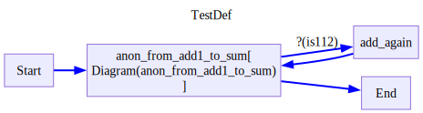

load_env()Trueload_env()TrueBaseModelExtra (**extra_data:Any)
*!!! abstract “Usage Documentation” Models
A base class for creating Pydantic models.
Attributes: class_vars: The names of the class variables defined on the model. private_attributes: Metadata about the private attributes of the model. signature: The synthesized __init__ [Signature][inspect.Signature] of the model.
__pydantic_complete__: Whether model building is completed, or if there are still undefined fields.
__pydantic_core_schema__: The core schema of the model.
__pydantic_custom_init__: Whether the model has a custom `__init__` function.
__pydantic_decorators__: Metadata containing the decorators defined on the model.
This replaces `Model.__validators__` and `Model.__root_validators__` from Pydantic V1.
__pydantic_generic_metadata__: Metadata for generic models; contains data used for a similar purpose to
__args__, __origin__, __parameters__ in typing-module generics. May eventually be replaced by these.
__pydantic_parent_namespace__: Parent namespace of the model, used for automatic rebuilding of models.
__pydantic_post_init__: The name of the post-init method for the model, if defined.
__pydantic_root_model__: Whether the model is a [`RootModel`][pydantic.root_model.RootModel].
__pydantic_serializer__: The `pydantic-core` `SchemaSerializer` used to dump instances of the model.
__pydantic_validator__: The `pydantic-core` `SchemaValidator` used to validate instances of the model.
__pydantic_fields__: A dictionary of field names and their corresponding [`FieldInfo`][pydantic.fields.FieldInfo] objects.
__pydantic_computed_fields__: A dictionary of computed field names and their corresponding [`ComputedFieldInfo`][pydantic.fields.ComputedFieldInfo] objects.
__pydantic_extra__: A dictionary containing extra values, if [`extra`][pydantic.config.ConfigDict.extra]
is set to `'allow'`.
__pydantic_fields_set__: The names of fields explicitly set during instantiation.
__pydantic_private__: Values of private attributes set on the model instance.*set_state_key (state, key, value)
get_state_key (state, key)
get_attr_metadata (obj, attr)
class RequiredFieldState(BaseModel):
field:ints = RequiredFieldState(field=3)
set_state_key(s,'field',5)
assert s == RequiredFieldState(field=5)/var/folders/v1/7y5rg0zx123dwr59mqm0fmlr0000gn/T/ipykernel_96520/1300691792.py:9: PydanticDeprecatedSince211: Accessing the 'model_fields' attribute on the instance is deprecated. Instead, you should access this attribute from the model class. Deprecated in Pydantic V2.11 to be removed in V3.0.
type_fields = obj.model_fields# a custom state is any basemodel
class CustomState(BaseModel):
# we can allow arbitrary attributes by setting extra='allow'
# this is useful for defining on the fly state keys with normal behavior
model_config = ConfigDict(extra='allow')
history:list[int] = list()
_hidden_attribute:str = 'hidden'
annoated_list: Annotated[list[int],list.append] = list()
def add_message(self,value):
self.history.append(value)
def first_message(self)->int:
if len(self.history) == 0:
return 0
return self.history[0]
@computed_field
def last_message(self)->int:
if len(self.history) == 0:
return 0
return self.history[-1]
@property
def hidden(self):
return self._hidden_attribute
@hidden.setter
def hidden(self,value):
self._hidden_attribute = values = CustomState()
s.add_message(3)
sCustomState(history=[3], annoated_list=[], last_message=3)set_state_key(s,'extra_attr',10)
set_state_key(s,'add_message',4)
set_state_key(s,'hidden','different hidden')
set_state_key(s,'annoated_list',5)/var/folders/v1/7y5rg0zx123dwr59mqm0fmlr0000gn/T/ipykernel_96520/1300691792.py:9: PydanticDeprecatedSince211: Accessing the 'model_fields' attribute on the instance is deprecated. Instead, you should access this attribute from the model class. Deprecated in Pydantic V2.11 to be removed in V3.0.
type_fields = obj.model_fieldsassert get_state_key(s,'last_message') == 4
assert get_state_key(s,'first_message') == 3
assert get_state_key(s,'hidden') == 'different hidden'
assert s.model_dump() == {'history': [3, 4], 'extra_attr': 10, 'last_message': 4,'annoated_list':[5]},sDiagramSchema (graph=None, state=None, factored_graph=None, start_node=None, end_node=None, name=None, type:__main__.DiagramType=None, anon=False, derive_state=False)
*A class representing a diagram schema for computational graphs.
A Diagram defines a directed graph structure where nodes represent computational steps and edges represent data flow between them. and supports validation of graph structure and parallel execution paths.
Params: name (str): Optional name for the diagram schema graph (nx.DiGraph): The underlying NetworkX directed graph state (Optional[BaseModel]): The state class for the diagram, by default uses an empty basemodel that allows for extra fields factored_graph (nx.DiGraph, optional): A simplified version of the graph after factorisation, where the entire diagram is of a single type. start_node (str): Name of the starting node, defaults to ‘Start’ end_node (str): Name of the ending node, defaults to ‘End’ type (DiagramType): The type of diagram (e.g. Flow, Decision) anon (bool): Whether this is an anonymous diagram derive_state (bool): Whether to derive the state from a calling diagram*
DiagramType (*values)
*Create a collection of name/value pairs.
Example enumeration:
class Color(Enum): … RED = 1 … BLUE = 2 … GREEN = 3
Access them by:
attribute access:
Color.RED <Color.RED: 1>
value lookup:
Color(1) <Color.RED: 1>
name lookup:
Color[‘RED’] <Color.RED: 1>
Enumerations can be iterated over, and know how many members they have:
len(Color) 3
list(Color) [<Color.RED: 1>, <Color.BLUE: 2>, <Color.GREEN: 3>]
Methods can be added to enumerations, and members can have their own attributes – see the documentation for details.*
Diagram (graph, funcs, type, schema:__main__.DiagramSchema, state:pydantic.main.BaseModel=None, anon=False, root=None)
*An instance of a stringdale diagram. Instantiated by calling the Schema()
Has the following public attributes: output - the output of the last run finished - whether the diagram has reached the End node state - the current state of the diagram*
DiagramSchema.__call__ (**kwargs)
Call self as a function.
DiagramSchema.get_input_only_state_keys ()
g = nx.DiGraph()
g.add_nodes_from([
('Start', {}),
('End', {}),
('Process4', {'is_break':True}),
('Process1', {'write_state': {'result':{0:('.',)}}}),
('Process2', {'for_each':[0]}),
('Process3', {}),
('identity', {'for_each':['x'],'read_state':{'result':{'input':('.',)}}}),
])
g.add_edges_from([
('Start','Process1',{'type':DiagramType.decision,
'condition':NamedLambda('is_even',lambda x: x%2==0),
}),
('Process1','Process2',{'type':DiagramType.flow}),
('Process1','Process3',{'type':DiagramType.flow}),
('Process2','identity',{'type':DiagramType.flow,'mapping':{'x':('a',)}}),
('Process3','identity',{'type':DiagramType.flow,'mapping':{'y':('b',)}}),
('Start','Process4',{'type':DiagramType.decision}),
('Process4','End',{'type':DiagramType.decision,'mapping':{'**':('a',)}}),
('identity','End',{'type':DiagramType.decision}),
])
funcs = {
'Process1':NamedLambda('add1',lambda x: x+1),
'Process2':NamedLambda('add2',lambda x: x+2),
'Process3':NamedLambda('add5',lambda x: x+5),
}
TestDef = DiagramSchema(graph=g,name='TestDef')
for node,func in funcs.items():
TestDef[node] = funcTestDef<__main__.DiagramSchema TestDef @0x10de06ed0>TestDef.stateBaseModelExtra()draw_nx(TestDef.graph)
NodeMapper ()
Initialize self. See help(type(self)) for accurate signature.
node_data_list,edge_data_list = _diagram_to_graphviz_data(TestDef.graph,funcs=TestDef.funcs)
node_data_list,edge_data_list([{'name': 'node_0',
'label': 'Start',
'shape': 'box',
'style': 'solid,filled'},
{'name': 'node_1', 'label': 'End', 'shape': 'box', 'style': 'solid,filled'},
{'name': 'node_2',
'label': 'Process4',
'shape': 'box',
'style': 'dashed,filled'},
{'name': 'node_3',
'label': 'Process1[ add1 ]',
'shape': 'box',
'style': 'solid,filled'},
{'name': 'node_4',
'label': 'State[result]',
'shape': 'cylinder',
'style': 'solid,filled'},
{'name': 'node_5',
'label': 'Process2[ add2, foreach=[0] ]',
'shape': 'box',
'style': 'bold,filled'},
{'name': 'node_6',
'label': 'Process3[ add5 ]',
'shape': 'box',
'style': 'solid,filled'},
{'name': 'node_7',
'label': 'identity[ foreach=[x] ]',
'shape': 'box',
'style': 'bold,filled'}],
[{'tail_name': 'node_3',
'head_name': 'node_4',
'label': '',
'style': 'dashed'},
{'tail_name': 'node_4',
'head_name': 'node_7',
'label': '. -> input',
'style': 'dashed'},
{'tail_name': 'node_0',
'head_name': 'node_3',
'label': '?(is_even)',
'style': 'bold',
'color': 'blue'},
{'tail_name': 'node_0',
'head_name': 'node_2',
'label': None,
'style': 'bold',
'color': 'blue'},
{'tail_name': 'node_2',
'head_name': 'node_1',
'label': 'a -> **',
'style': 'bold',
'color': 'blue'},
{'tail_name': 'node_3',
'head_name': 'node_5',
'label': None,
'style': 'solid',
'color': 'black'},
{'tail_name': 'node_3',
'head_name': 'node_6',
'label': None,
'style': 'solid',
'color': 'black'},
{'tail_name': 'node_5',
'head_name': 'node_7',
'label': 'a -> x',
'style': 'solid',
'color': 'black'},
{'tail_name': 'node_6',
'head_name': 'node_7',
'label': 'b -> y',
'style': 'solid',
'color': 'black'},
{'tail_name': 'node_7',
'head_name': 'node_1',
'label': None,
'style': 'bold',
'color': 'blue'}])dot = draw_graphviz(node_data_list,edge_data_list,
name=TestDef.name,direction='TB',
node_attrs={'shape':'box','color':'#9370DB','fillcolor':'#ECECFF','style':'filled'}
,edge_attrs={},graph_attrs={})
dot
diagram_to_dot (graph, name, funcs, direction='TB', **kwargs)
diagram_to_dot(TestDef.graph,TestDef.name,TestDef.funcs)
DiagramSchema.draw (return_dot=False, direction='LR', recursive:Union[bool,List[str]]=False, factored=False, **kwargs)
*Draw a DiagramSchema using graphviz.
Args: diagram: Either a diagram object or a diagram scheme object name: If provided, uses this name for the diagram in the Mermaid title return_dot: If True, returns the graphviz dot object direction: direction to draw, either TB (top to bottom) or LR (left to right), defaults to TB recursive: Whether to draw subdiagrams as well. If False, only the top level diagram is drawn. If True, all subdiagrams are drawn. If a list of strings, only the subdiagrams with whose names the regex strings are drawn. factored: If True, draws the factored graph, used for debugging Returns: If return_dot is True, returns dot objects Otherwise displays diagram when in an Ipython environment*
draw_diagram (diagram, return_dot=False, direction='LR', recursive:Union[bool,List[str]]=False, factored=False, funcs=None, **kwargs)
*Draw a DiagramSchema using graphviz.
Args: diagram: Either a diagram object or a diagram scheme object name: If provided, uses this name for the diagram in the Mermaid title return_dot: If True, returns the graphviz dot object direction: direction to draw, either TB (top to bottom) or LR (left to right), defaults to TB recursive: Whether to draw subdiagrams as well. If False, only the top level diagram is drawn. If True, all subdiagrams are drawn. If a list of strings, only the subdiagrams with whose names the regex strings are drawn. factored: If True, draws the factored graph, used for debugging Returns: If return_dot is True, returns dot objects Otherwise displays diagram when in an Ipython environment*
get_recursive_diagrams (diagram, funcs, recursive:Union[bool,List[str]]=False, factored=False)
TestDef.draw()g = nx.DiGraph()
g.add_nodes_from([
('Start', {}),
('End', {}),
('split1', {}),
('split2', {}),
('join', {}),
])
g.add_edges_from([
('Start','split1',{'type':DiagramType.flow}),
('Start','split2',{'type':DiagramType.flow}),
('split1','join',{'type':DiagramType.flow}),
('split2','join',{'type':DiagramType.flow}),
('join','End',{'type':DiagramType.decision}),
])
A = DiagramSchema(graph=g,name='TestDef')
A.draw()
g = A.graph
sources = set(_get_sub_sources(g))
sinks = set(_get_sub_sinks(g))
assert sources == {'Start','join'},sources
assert sinks == {'End','join'},sinksspanned_sub_diagrams = {source:_spanned_sub_diagram(g,source) for source in sources}
is_simple = {source: _is_diagram_simple(spanned_sub_diagrams[source]) for source in sources}
sources,sinks,spanned_sub_diagrams,is_simple
for source,sub_diagram in spanned_sub_diagrams.items():
print(f'source: {source}, nodes: {list(sub_diagram.nodes())}, edges: {list(sub_diagram.edges())}')
print(f'is simple: {is_simple[source]}')
draw_nx(sub_diagram)source: Start, nodes: ['Start', 'split1', 'split2', 'join'], edges: [('Start', 'split1'), ('Start', 'split2'), ('split1', 'join'), ('split2', 'join')]
is simple: True
source: join, nodes: ['End', 'join'], edges: [('join', 'End')]
is simple: True
g = deepcopy(A.graph)
funcs = deepcopy(A.funcs)
g_tag,funcs_tag = _compress_sub_diagram(g,funcs,spanned_sub_diagrams['Start'],'Start','join')
draw_nx(g_tag)
funcs{'anon_from_Start_to_join': <__main__.DiagramSchema anon_from_Start_to_join @0x10dd9e900>}draw_nx(funcs['anon_from_Start_to_join'].factored_graph)
factor_graph (g, funcs)
Given a graph of a diagram schemas, and a dictionary of functions, factor the graph into a nested simple diagrams. Return a new nested graph with the new diagram schemas in the funcs dictionary.
DiagramSchema.factor_diagram ()
from stringdale.viz import draw_nxg = nx.DiGraph()
g.add_nodes_from([
('Start', {}),
('End', {}),
('split1', {}),
('split2', {}),
('join', {}),
])
g.add_edges_from([
('Start','split1',{'type':DiagramType.flow}),
('Start','split2',{'type':DiagramType.flow}),
('split1','join',{'type':DiagramType.flow}),
('split2','join',{'type':DiagramType.flow}),
('join','End',{'type':DiagramType.decision}),
])
A = DiagramSchema(graph=g,name='TestDef')
A.draw()
with checkLogs():
A.factor_diagram()__main__ - DEBUG - Factoring graph
nodes ['Start', 'End', 'split1', 'split2', 'join']
edges [('Start', 'split1'), ('Start', 'split2'), ('split1', 'join'), ('split2', 'join'), ('join', 'End')]
__main__ - DEBUG - Sources: ['Start', 'join']
__main__ - DEBUG - Sinks: ['End', 'join']
__main__ - DEBUG - Spanned sub diagrams: {'Start': ['Start', 'split1', 'split2', 'join'], 'join': ['End', 'join']}
__main__ - DEBUG - Is simple: {'Start': True, 'join': True}
__main__ - DEBUG - Compressing subdiagram from Start to join
__main__ - DEBUG - Factoring graph
nodes ['End', 'anon_from_Start_to_join']
edges [('anon_from_Start_to_join', 'End')]
__main__ - DEBUG - Graph is simple, breakingA.draw(factored=True)

class Adder():
def __init__(self,x):
self.x = x
def __call__(self,y):
return self.x + y
def __repr__(self):
return f'Adder({self.x})'
sum = NamedLambda('sum',sum)
is112 = NamedLambda('is112',lambda x: x == 112)g = nx.DiGraph()
g.add_nodes_from([
('Start', {}),
('End', {}),
('add1', {}),
('add10', {}),
('add100', {}),
('sum', {}),
('add_again', {}),
])
g.add_edges_from([
('Start','add1',{'type':DiagramType.decision}),
('add1','add10',{'type':DiagramType.flow}),
('add1','add100',{'type':DiagramType.flow}),
('add10','sum',{'type':DiagramType.flow}),
('add100','sum',{'type':DiagramType.flow}),
('sum','End',{'type':DiagramType.decision}),
('sum','add_again',{'type':DiagramType.decision,'condition':is112}),
('add_again','add1',{'type':DiagramType.decision}),
])
funcs = {
'add1':Adder(1),
'add10':Adder(10),
'add100':Adder(100),
'sum':sum,
}
A = DiagramSchema(graph=g,name='TestDef')
for node,func in funcs.items():
A[node] = func
A.draw()
with checkLogs():
A.factor_diagram()__main__ - DEBUG - Factoring graph
nodes ['Start', 'End', 'add1', 'add10', 'add100', 'sum', 'add_again']
edges [('Start', 'add1'), ('add1', 'add10'), ('add1', 'add100'), ('add10', 'sum'), ('add100', 'sum'), ('sum', 'End'), ('sum', 'add_again'), ('add_again', 'add1')]
__main__ - DEBUG - Sources: ['Start', 'add1', 'sum']
__main__ - DEBUG - Sinks: ['End', 'add1', 'sum']
__main__ - DEBUG - Spanned sub diagrams: {'Start': ['Start', 'add1'], 'add1': ['add1', 'add10', 'add100', 'sum'], 'sum': ['End', 'add1', 'sum', 'add_again']}
__main__ - DEBUG - Is simple: {'Start': True, 'add1': True, 'sum': False}
__main__ - DEBUG - Compressing subdiagram from add1 to sum
__main__ - DEBUG - Factoring graph
nodes ['Start', 'End', 'add_again', 'anon_from_add1_to_sum']
edges [('Start', 'anon_from_add1_to_sum'), ('add_again', 'anon_from_add1_to_sum'), ('anon_from_add1_to_sum', 'End'), ('anon_from_add1_to_sum', 'add_again')]
__main__ - DEBUG - Graph is simple, breakingA.funcs{'add1': Adder(1),
'add10': Adder(10),
'add100': Adder(100),
'sum': sum,
'anon_from_add1_to_sum': <__main__.DiagramSchema anon_from_add1_to_sum @0x10de044d0>}A.draw(factored=True)
draw_nx(A.factored_graph)g = nx.DiGraph()
g.add_edges_from([
('Start','choice1',{'type':DiagramType.flow}),
('Start','choice2',{'type':DiagramType.flow}),
('end_choice1','end',{'type':DiagramType.flow}),
('end_choice2','end',{'type':DiagramType.flow}),
('choice1','add10',{'type':DiagramType.decision}),
('choice1','add100',{'type':DiagramType.decision}),
('add10','end_choice1',{'type':DiagramType.decision}),
('add100','end_choice1',{'type':DiagramType.decision}),
('choice2','square',{'type':DiagramType.decision}),
('choice2','cube',{'type':DiagramType.decision}),
('square','end_choice2',{'type':DiagramType.decision}),
('cube','end_choice2',{'type':DiagramType.decision}),
])
A = DiagramSchema(graph=g,name='TestDef')
A.draw()
with checkLogs():
A.factor_diagram()__main__ - DEBUG - Factoring graph
nodes ['Start', 'choice1', 'choice2', 'end_choice1', 'end', 'end_choice2', 'add10', 'add100', 'square', 'cube']
edges [('Start', 'choice1'), ('Start', 'choice2'), ('choice1', 'add10'), ('choice1', 'add100'), ('choice2', 'square'), ('choice2', 'cube'), ('end_choice1', 'end'), ('end_choice2', 'end'), ('add10', 'end_choice1'), ('add100', 'end_choice1'), ('square', 'end_choice2'), ('cube', 'end_choice2')]
__main__ - DEBUG - Sources: ['Start', 'choice1', 'choice2', 'end_choice1', 'end_choice2']
__main__ - DEBUG - Sinks: ['choice1', 'choice2', 'end_choice1', 'end', 'end_choice2']
__main__ - DEBUG - Spanned sub diagrams: {'Start': ['Start', 'choice2', 'choice1'], 'choice1': ['add10', 'end_choice1', 'choice1', 'add100'], 'choice2': ['square', 'end_choice2', 'cube', 'choice2'], 'end_choice1': ['end_choice1', 'end'], 'end_choice2': ['end_choice2', 'end']}
__main__ - DEBUG - Is simple: {'Start': False, 'choice1': True, 'choice2': True, 'end_choice1': True, 'end_choice2': True}
__main__ - DEBUG - Compressing subdiagram from choice2 to end_choice2
__main__ - DEBUG - Factoring graph
nodes ['Start', 'choice1', 'end_choice1', 'end', 'add10', 'add100', 'anon_from_choice2_to_end_choice2']
edges [('Start', 'choice1'), ('Start', 'anon_from_choice2_to_end_choice2'), ('choice1', 'add10'), ('choice1', 'add100'), ('end_choice1', 'end'), ('add10', 'end_choice1'), ('add100', 'end_choice1'), ('anon_from_choice2_to_end_choice2', 'end')]
__main__ - DEBUG - Sources: ['Start', 'choice1', 'end_choice1']
__main__ - DEBUG - Sinks: ['choice1', 'end_choice1', 'end']
__main__ - DEBUG - Spanned sub diagrams: {'Start': ['Start', 'choice1', 'end', 'anon_from_choice2_to_end_choice2'], 'choice1': ['choice1', 'end_choice1', 'add10', 'add100'], 'end_choice1': ['end_choice1', 'end']}
__main__ - DEBUG - Is simple: {'Start': False, 'choice1': True, 'end_choice1': True}
__main__ - DEBUG - Compressing subdiagram from choice1 to end_choice1
__main__ - DEBUG - Factoring graph
nodes ['Start', 'end', 'anon_from_choice2_to_end_choice2', 'anon_from_choice1_to_end_choice1']
edges [('Start', 'anon_from_choice2_to_end_choice2'), ('Start', 'anon_from_choice1_to_end_choice1'), ('anon_from_choice2_to_end_choice2', 'end'), ('anon_from_choice1_to_end_choice1', 'end')]
__main__ - DEBUG - Graph is simple, breakingA.draw(factored=True)


# Handling state conflicts
# flow nodes cant write state if they have a non one mutiplicity
# or if there is another node that reads or writes the same state
# for nested anonymous diagrams, where state is shared, we need an ownership mechanism
# each subdiagram has who it reads and writes to, and we need to make sure that there are no multiplicities except multiple readers at once.
# also, we need to figure out how to avoid sharing states between a subdiagram that is used twice in a flow diagram. we need to make copies of the diagram for each one.
# currently, to start, I won't allow writing to shared state within a flow diagram.
# this is done by checking read_keys and write_keys on the unfactored graphDiagramSchema.post_def ()
validate the graph and factor it
g = nx.DiGraph()
g.add_nodes_from([
('Start', {}),
('End', {}),
('add1', {}),
('add10', {}),
('add100', {}),
('sum', {}),
('add_again', {}),
])
g.add_edges_from([
('Start','add1',{'type':DiagramType.decision}),
('add1','add10',{'type':DiagramType.flow}),
('add1','add100',{'type':DiagramType.flow}),
('add10','sum',{'type':DiagramType.flow}),
('add100','sum',{'type':DiagramType.flow}),
('sum','End',{'type':DiagramType.decision}),
('sum','add_again',{'type':DiagramType.decision,'condition':is112}),
('add_again','add1',{'type':DiagramType.decision}),
])
funcs = {
'add1':Adder(1),
'add10':Adder(10),
'add100':Adder(100),
'sum':sum,
}
A = DiagramSchema(graph=g,name='TestDef')
for node,func in funcs.items():
A[node] = func
draw_diagram(A)
with checkLogs():
A.post_def()__main__ - DEBUG - Post def for diagram TestDef
__main__.validate - DEBUG - Validating unfactored diagram TestDef
__main__.validate - DEBUG - All nodes have a single edge type
__main__ - DEBUG - Factoring graph
nodes ['Start', 'End', 'add1', 'add10', 'add100', 'sum', 'add_again']
edges [('Start', 'add1'), ('add1', 'add10'), ('add1', 'add100'), ('add10', 'sum'), ('add100', 'sum'), ('sum', 'End'), ('sum', 'add_again'), ('add_again', 'add1')]
__main__ - DEBUG - Sources: ['Start', 'add1', 'sum']
__main__ - DEBUG - Sinks: ['End', 'add1', 'sum']
__main__ - DEBUG - Spanned sub diagrams: {'Start': ['Start', 'add1'], 'add1': ['add1', 'add10', 'add100', 'sum'], 'sum': ['End', 'add1', 'sum', 'add_again']}
__main__ - DEBUG - Is simple: {'Start': True, 'add1': True, 'sum': False}
__main__ - DEBUG - Compressing subdiagram from add1 to sum
__main__ - DEBUG - Factoring graph
nodes ['Start', 'End', 'add_again', 'anon_from_add1_to_sum']
edges [('Start', 'anon_from_add1_to_sum'), ('add_again', 'anon_from_add1_to_sum'), ('anon_from_add1_to_sum', 'End'), ('anon_from_add1_to_sum', 'add_again')]
__main__ - DEBUG - Graph is simple, breaking
__main__ - DEBUG - Validating factored diagram TestDef with nodes ['Start', 'End', 'add_again', 'anon_from_add1_to_sum']
__main__ - DEBUG - Validating factored diagram anon_from_add1_to_sum with nodes ['add1', 'add10', 'add100', 'sum']
__main__.validate - DEBUG - Port mapping for node add1:{}
__main__.validate - DEBUG - Port mapping for node add10:{'add1': {}}
__main__.validate - DEBUG - Port mapping for node add100:{'add1': {}}
__main__.validate - DEBUG - Port mapping for node sum:{'add10': {}, 'add100': {}}
__main__.validate - DEBUG - Port mapping for node Start:{}
__main__.validate - DEBUG - Port mapping for node End:{'anon_from_add1_to_sum': {}}
__main__.validate - DEBUG - Port mapping for node add_again:{'anon_from_add1_to_sum': {}}
__main__.validate - DEBUG - Port mapping for node anon_from_add1_to_sum:{'Start': {}, 'add_again': {}}draw_diagram(A,factored=True)

draw_nx(A.factored_graph)draw_nx(A.funcs['anon_from_add1_to_sum'].factored_graph)A.draw()
A.draw(factored=True)a = A(add100=None)
# note that add100 doesnt have a function now since we overrode it
a.draw(factored=True)

assert a.state == A.state,a.statecopy(a)<__main__.Diagram>